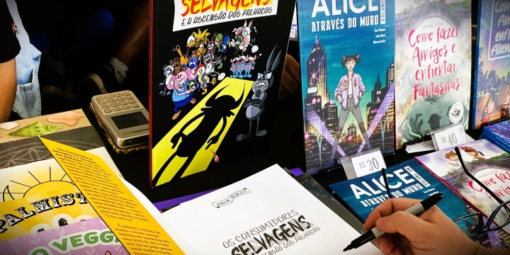

HISTÓRIA DOS HQs
No final do século XIX, surge nos EUA a primeira HQ quando Richard Outcauld, autor e ilustrador, criou uma narrativa sobre um garoto do gueto de Nova Iorque que vivia com um pijama amarelo “The Yellow kid”, e já no início do século XX expandiu-se a criação das histórias em quadrinhos. Na década de 1930 surgiu a primeira HQ de super-herói, com o “Superman”.
As histórias em quadrinhos (HQs) no Brasil têm uma trajetória rica e interessante. Vamos explorar um pouco sobre como chegaram ao país, qual foi a primeira HQ lançada e algumas das mais famosas.
Chegada das HQs no Brasil
As HQs chegaram ao Brasil no início do século XX, importadas principalmente da Europa e dos Estados Unidos. No começo, as histórias eram publicadas em jornais e revistas, e rapidamente se tornaram populares entre os leitores brasileiros.
Primeira HQ Brasileira
A primeira HQ brasileira é geralmente considerada "As Aventuras de Nhô-Quim ou Impressões de uma Viagem à Corte", criada por Angelo Agostini em 1869. Angelo Agostini foi um pioneiro do jornalismo e das HQs no Brasil, e suas obras são vistas como precursoras do gênero no país. "Nhô-Quim" retratava a vida e os costumes da época de forma humorística e crítica.
Evolução das HQs
Com o passar dos anos, as HQs no Brasil evoluíram significativamente. Durante a década de 1930, surgiram os primeiros personagens e revistas dedicados exclusivamente às HQs, como "O Tico-Tico", que foi uma das primeiras revistas a publicar HQs no país.
Anos Dourados
Nos anos 1950 e 1960, as HQs alcançaram grande popularidade no Brasil, com personagens como "O Amigo da Onça" e "Jerônimo, o Herói do Sertão". Nessa época, também começaram a surgir publicações voltadas para o público infantil, como as revistas da Disney, que eram extremamente populares.
Turma da Mônica
Sem dúvida, a série de HQs mais famosa e influente do Brasil é "Turma da Mônica", criada por Mauricio de Sousa. A primeira história da Turma da Mônica foi publicada em 1959, e desde então, os personagens como Mônica, Cebolinha, Cascão, Magali e muitos outros se tornaram ícones da cultura brasileira. As histórias são conhecidas por seu humor, criatividade e por abordar temas relevantes de maneira acessível para crianças e adultos.
HQs Contemporâneas
Atualmente, o mercado de HQs no Brasil é bastante diversificado, incluindo tanto publicações nacionais quanto traduções de HQs internacionais. Além da Turma da Mônica, outras séries e autores têm ganhado destaque, como "O Doutrinador" de Luciano Cunha, que aborda temas políticos e sociais. Além disso, o Brasil tem visto um crescimento na produção de HQs independentes, com artistas explorando uma variedade de estilos e temas. Festivais como o Festival Internacional de Quadrinhos (FIQ) em Belo Horizonte e a Comic Con Experience (CCXP) em São Paulo têm contribuído para o crescimento e a valorização da cultura das HQs no país.